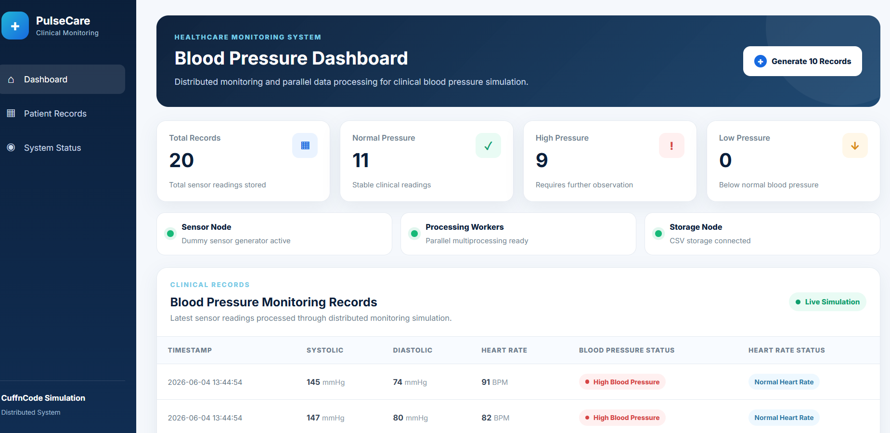

Simulasi Data Sensor
Data tekanan darah dan detak jantung dibuat secara dummy karena belum memakai sensor fisik secara langsung.
CuffnCode Project Extension
Simulasi monitoring tekanan darah berbasis web yang menerapkan konsep komputasi paralel dan sistem terdistribusi. Data sensor dibuat secara dummy, diproses oleh beberapa worker, disimpan melalui Storage Node, lalu ditampilkan melalui dashboard klinis PulseCare.
Project Overview
Project ini merupakan pengembangan tambahan dari repository CuffnCode. Tujuannya adalah membuat simulasi pengolahan data tekanan darah dengan alur yang lebih mudah dipahami dan ditampilkan secara visual.

Data tekanan darah dan detak jantung dibuat secara dummy karena belum memakai sensor fisik secara langsung.
Banyak data sensor diproses secara bersamaan memakai beberapa worker dengan Python multiprocessing.
Hasil pengolahan data ditampilkan melalui dashboard web dengan tampilan seperti sistem monitoring klinis.
System Architecture
Setiap bagian program memiliki tugas masing-masing, tetapi semuanya saling terhubung dalam satu alur sistem.
Menghasilkan data tekanan darah dummy.
Memproses data secara paralel.
Menentukan status hasil klasifikasi.
Menyimpan hasil pengolahan ke CSV.
Menampilkan data melalui browser.
Main Features
Setiap file memiliki fungsi yang berbeda agar struktur program lebih jelas dan mudah dipahami.
File sensor_node.py menghasilkan data
dummy berupa timestamp, tekanan darah atas, tekanan
darah bawah, dan detak jantung.
File processor.py memproses banyak data
secara paralel menggunakan
multiprocessing.Pool.
File storage_node.py menyimpan hasil
pemrosesan ke file CSV dan membaca kembali data yang
akan ditampilkan.
File app.py menghubungkan Sensor Node,
Processing Workers, Storage Node, dan tampilan
dashboard.
Classification Rules
Data dummy yang sudah dibuat akan dikelompokkan berdasarkan nilai tekanan darah dan detak jantung.
| Jenis Data | Kondisi | Hasil Klasifikasi |
|---|---|---|
| Tekanan Darah | Systolic di bawah 90 atau diastolic di bawah 60 | Low Blood Pressure |
| Tekanan Darah | Systolic minimal 140 atau diastolic minimal 90 | High Blood Pressure |
| Tekanan Darah | Selain kondisi di atas | Normal Blood Pressure |
| Detak Jantung | Di bawah 60 BPM | Low Heart Rate |
| Detak Jantung | Di atas 100 BPM | High Heart Rate |
| Detak Jantung | Selain kondisi di atas | Normal Heart Rate |
Installation Guide
Project dapat dijalankan secara lokal melalui terminal.
cd Distributed-Blood-Pressure-Monitoring
pip install -r requirements.txt
python app.py
http://127.0.0.1:5000
Contributor
NRP: 152024143
Evaluasi 3 — Komputasi Paralel dan Sistem Terdistribusi